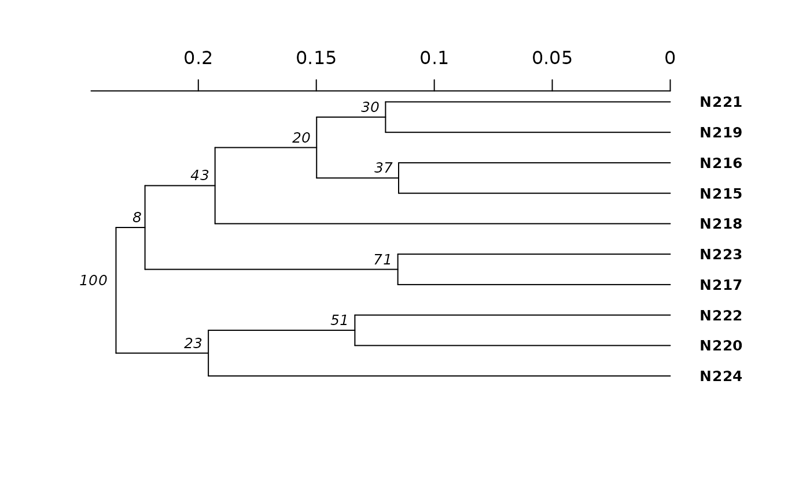

Create a tree using Bruvo's Distance with non-parametric bootstrapping.
Source:R/bruvo.r
bruvo.boot.RdCreate a tree using Bruvo's Distance with non-parametric bootstrapping.
Usage
bruvo.boot(
pop,
replen = 1,
add = TRUE,
loss = TRUE,
sample = 100,
tree = "upgma",
showtree = TRUE,
cutoff = NULL,
quiet = FALSE,
root = NULL,
...
)Arguments
- pop
- replen
a
vectorofintegersindicating the length of the nucleotide repeats for each microsatellite locus.- add
if
TRUE, genotypes with zero values will be treated under the genome addition model presented in Bruvo et al. 2004.- loss
if
TRUE, genotypes with zero values will be treated under the genome loss model presented in Bruvo et al. 2004.- sample
an
integerindicated the number of bootstrap replicates desired.- tree
any function that can generate a tree from a distance matrix. Default is
upgma.- showtree
logicalifTRUE, a tree will be plotted with nodelabels.- cutoff
integerthe cutoff value for bootstrap node label values (between 0 and 100).- quiet
logicaldefaults toFALSE. IfTRUE, a progress bar and messages will be suppressed.- root
logicalThis is a parameter passed on toboot.phylo. If thetreeargument produces a rooted tree (e.g. "upgma"), then this value should beTRUE. If it produces an unrooted tree (e.g. "nj"), then the value should beFALSE. By default, it is set toNULL, which will assume an unrooted phylogeny unless the function name contains "upgma".- ...
any argument to be passed on to
boot.phylo. eg.quiet = TRUE.
Details
This function will calculate a tree based off of Bruvo's distance
and then utilize boot.phylo to randomly sample loci with
replacement, recalculate the tree, and tally up the bootstrap support
(measured in percent success). While this function can take any tree
function, it has native support for two algorithms: nj
and upgma. If you want to use any other functions,
you must load the package before you use them (see examples).
Note
Please refer to the documentation for bruvo.dist for details on
the algorithm. If the user does not provide a vector of appropriate length
for replen , it will be estimated by taking the minimum difference
among represented alleles at each locus. IT IS NOT RECOMMENDED TO RELY ON
THIS ESTIMATION.
References
Ruzica Bruvo, Nicolaas K. Michiels, Thomas G. D'Souza, and Hinrich Schulenburg. A simple method for the calculation of microsatellite genotype distances irrespective of ploidy level. Molecular Ecology, 13(7):2101-2106, 2004.
See also
bruvo.dist, nancycats,
upgma, nj, boot.phylo,
nodelabels, tab,
missingno.
Examples
# Please note that the data presented is assuming that the nancycat dataset
# contains all dinucleotide repeats, it most likely is not an accurate
# representation of the data.
# Load the nancycats dataset and construct the repeat vector.
data(nancycats)
ssr <- rep(2, 9)
# Analyze the 1st population in nancycats
bruvo.boot(popsub(nancycats, 1), replen = ssr)
#>
#> Bootstrapping...
#> (note: calculation of node labels can take a while even after the progress bar is full)
#>
#>
Running bootstraps: 100 / 100
#> Calculating bootstrap values... done.

#>
#> Phylogenetic tree with 10 tips and 9 internal nodes.
#>
#> Tip labels:
#> N215, N216, N217, N218, N219, N220, ...
#> Node labels:
#> 100, 23, 8, 71, 43, 51, ...
#>
#> Rooted; includes branch length(s).
if (FALSE) { # \dontrun{
# Always load the library before you specify the function.
library("ape")
# Estimate the tree based off of the BIONJ algorithm.
bruvo.boot(popsub(nancycats, 9), replen = ssr, tree = bionj)
# Utilizing balanced FastME
bruvo.boot(popsub(nancycats, 9), replen = ssr, tree = fastme.bal)
# To change parameters for the tree, wrap it in a function.
# For example, let's build the tree without utilizing subtree-prune-regraft
myFastME <- function(x) fastme.bal(x, nni = TRUE, spr = FALSE, tbr = TRUE)
bruvo.boot(popsub(nancycats, 9), replen = ssr, tree = myFastME)
} # }